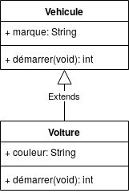
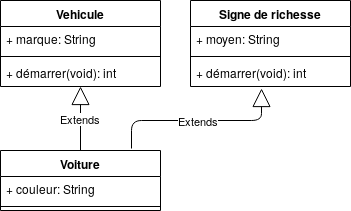
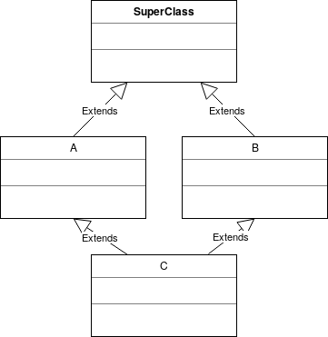
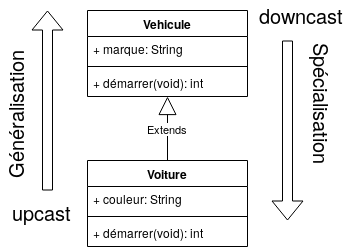
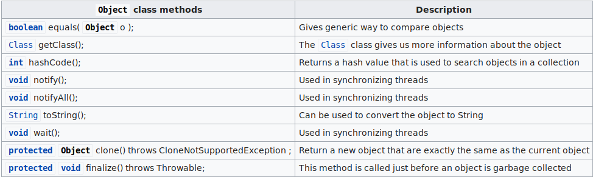
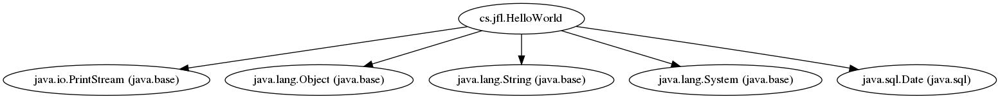
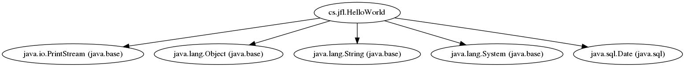
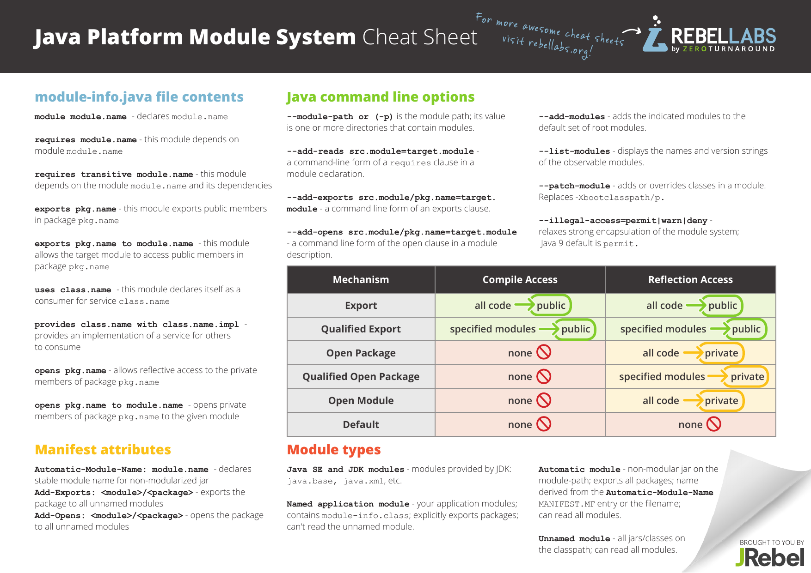

POO et Java
Jean-Francois Lalande - September 2020 - Version 2
Ce cours traite des concepts de la programmation objets, illustrés principalement avec le langage Java, et parfois en Python.
Presenter Notes
1 Plan
Plan du module
Presenter Notes
2 Historique et syntaxe
Presenter Notes
Bref historique
- JDK 1.0 - 1996 - Init
- JDK 1.1 - 1997 - Reflection, JDBC, Inner classes
- JDK 1.2 - 1998 - Collection, JIT
- J2SE 1.3 - 2000 - Java sound, JNDI, JPDA
- J2SE 1.4 - 2002 - Assert, regex, exception chaining, parser XML, XSLT
- J2SE 5 - 2004 - Generics, autoboxing, enums, varargs, for (x : X)
- Java SE 6 - 2006 -
- Java SE 7 - 2011 - Java NIO
- Java SE 8 - 2014 - Lambdas
- Java SE 9 - 2015 - Modules, JSON, HTTP/2
- Java SE 10 - 2018 - compilateur JIT Graal
- Java SE 11 - 2018 -
- Java SE 12 - 2019 - Shenandoah: un ramasse miette à courtes pauses
Presenter Notes
La syntaxe en 3 minutes

Presenter Notes
3 Programmation orientée objet
Presenter Notes
Les concepts de la POO
Organisation du code pour atteindre de nouveaux objectifs:
- proche d'une réalité métier
- favoriser la réutilisabilité du code
- favoriser la conception
Basée sur quatre grands principes:
- l'encapsulation
- le masquage des données
- la composition
- le polymorphisme
Presenter Notes
L'objet
L'objet met en oeuvre le principe d'encapsulation et étend le concept de variable des langages non objets.
Encapsulation: regrouper et masquer les données et programmes relatifs à un objet vis-à-vis des autres objets.
L'objet contient:
- des attributs typés (des variables)
- des méthodes (du code)
En UML, on représente l'objet ainsi:
D'un point de vue d'un programme qui s'exécute, un objet occupe une zone mémoire pour stocker ses attributs, et ses méthodes.
Presenter Notes
La classe
La classe est le modèle ou patron, qui permet de créer un objet.
En UML, on représente la classe ainsi:

Un objet est une instance de classe.
Conséquement:
- une classe contient des noms d'attributs mais pas de valeurs d'attributs
- une classe contient le code des méthodes
- l'objet peut se passer du code des méthodes
Presenter Notes
Et en Java ?
Définition de la classe Vehicule:
public class Vehicule { public String marque = "Peugeot"; public int demarrer() { return 0; } }
Instanciation depuis le programme "main":
public class Main { public static void main(String[] args) { Vehicule v = new Vehicule(); v.demarrer(); System.out.println(v.marque); } }
Presenter Notes
Et en Python ?
C'est un peu le bordel:
class Vehicule: marque = "Peugeot" # Static variable... but may used as an object attribute def demarrer(self): return 0 v = Vehicule() print("Vehicule.marque: " + Vehicule.marque) print("v.marque: " + v.marque + " -- WTF?") v2 = Vehicule() v2.marque = "Toyota" print("v2.marque: " + v2.marque) print("v.marque: " + v.marque)
Vehicule.marque: Peugeot v.marque: Peugeot -- WTF? v2.marque: Toyota v.marque: Peugeot
Solution: utiliser self et un constructeur (cf. plus tard)
Presenter Notes
Soi-même: this et self
Puisque on souhaite mettre en oeuvre l'encapsulation, c'est-à-dire distinguer ce qui est dans l'objet et extérieur à l'objet, les langages définissent un mot du langage désignant l'objet contenant le code qui s'exécute:
En Java: this
public class Vehicule { public int vitesse; public int demarrer() { this.vitesse = 0; return this.vitesse; } }
En Python: self
class Vehicule: demarrer(): self.vitesse = 0
Presenter Notes
Le constructeur
Il s'agit de la méthode appelée lors de l'instanciation d'un objet. Son rôle est de:
- d'initialiser les attributs
- de réaliser des actions obligatoires rendant l'objet viable
En général on a trois grand types de constructeurs:
- le constructeur par défaut (sans paramètre)
- le constructeur par recopie (1 paramètre du même type)
- les constructeurs avec des tas de paramètres
Presenter Notes
Et en Java ?
public class Vehicule { public String marque = null; public Moteur m = null; /* Constructeur par défaut */ public Vehicule() { this.marque = "Peugeot"; this.m = new Moteur(); } /* Constructeur sympa */ public Vehicule(String marque) { this.marque = marque; this.m = new Moteur(); } /* Constructeur par recopie */ public Vehicule(Vehicule v) { // this.moteur = v.moteur; // Hérésie this.m = new Moteur(); // Pas top, mais mieux this.marque = v.marque; // Possible et toléré car String immutable this.marque = new String(v.marque); } }
Presenter Notes
Et en Python ?
Pas de surcharge des constructeurs:
class Vehicule: def __init__(self): self.marque = "Peugeot" def __init__(self, marque): # Vient d'écraser le constructeur précédent self.marque = marque # v = Vehicule() # Plante ! Pas de surcharge de constructeur ! m2 = "Toyota" v2 = Vehicule(m2) m3 = "Nissan" v3 = Vehicule(m3) print("v2.marque: " + v2.marque) print("v3.marque: " + v3.marque)
Output:
v2.marque: Toyota v3.marque: Nissan
Presenter Notes
Retour sur le principe d'encapsulation
Encapsuler les données et le code permet d'améliorer la qualité du code, sa réutilisabilité et d'aider le prochain développeur dans sa compréhension de ce code.
Le but premier de l'encapsulation est de grouper le code et les données dans une même classe pour éviter l'éparpillement du code qui traite ces données.
Cependant, l'encapsulation n'empêche nullement d'accèder aux données. On peut donc par inadvertance les modifier à loisir depuis l'extérieur de la classe. Pour éviter cela, on cherche donc à:
- masquer les données à ne pas exposer à ce risque
- exposer les données que chacun peut lire/écrire
On parle de visibilité et de masquage de données.
Presenter Notes
Visibilité et masquage des données
Certains langages proposent de définir une sorte de contrôle d'accès aux données de l'objet. Cela permet de:
- se poser des questions sur la visibilité des attributs et méthodes
- se poser des questions sur le code:
- mécanique interne à l'objet ou pas ?
- actions légitimes de l'utilisateur de l'objet ?
Presenter Notes
La visibilité des attributs
Les langages orientés objets proposent généralement au moins deux niveaux de visibilité des attributs:
- public: tout code peut y avoir accès
- private: seule le code de classe a un accès
On trouve aussi la notion de visibilité "package", "module" et "amie":
- package / module: une classe du même package, module a un accès
- protected: les sous-classes peuvent y avoir accès
- amie: une classe déclarée amie a un accès
- published: visible par tous et à conserver tel quel dans le futur
Presenter Notes
Et en Java ?
- private: non visible classes
- protected: comme public pour l'instant (cf. section héritage)
- public: visible pour tous
Presenter Notes
La visibilité des méthodes Java
Elle est identique aux règles de visibilité des attributs en Java.
public class Machin { public void f(); private void g(); } public class Truc { public void h() { Machin m = new Machin(); m.f(); } }
Presenter Notes
Et en Python ?
Les méthodes et attributs privées existent et son préfixés par un double underscore. Cependant, il n'y a pas de garantie du langage car on peut contourner la visibilité par introspection...
Par exemple, le programme suivant:
class Toto(): def test(self): return 10; def __test2(self): return 15; if __name__ == "__main__": t = Toto() print t.test(); # Ok, that's public #print t.test2(); # Not ok, that's private print t._Toto__test2(); # Ok, too !
écrit en console:
10 15
Presenter Notes
La composition
La composition permet de définir un lien entre deux classes. Il y a un lien fort entre les deux objets composés, à tel point que la destruction de l'un entraine la destruction de l'autre.
La cardinalité du composé (le moteur) est forcément de 1 maximum (pas de * possible). Dans l'autre sens, on est libre car dans notre exemple, une voiture pourrait avoir plusieurs moteurs (une hybride par exemple).
Presenter Notes
Implémentation
D'un point de vue de l'implémentation, on utilise tout simplement un attribut de type:
- référence simple: 0 à 1 objet composé
- collection: 0 à * objets composés
public class Voiture { private Moteur p = null; Moteur getMoteur() { return p; } }
La destruction du moteur est automatique: elle est assurée par le garbage collector si la voiture est détruite.
Presenter Notes
L'agrégation
Une relaxation de la composition est l'agrégation: les entités sont liées mais ne s'appartiennent pas: on peut être agrégé à plusieurs classes différentes. Il n'y a pas de destruction automatique à implémenter quand on lie les objets par agrégation.

public class Personne { private Vector<Voiture> p = null; }
L'agrégation n'a pas de sens: on peut agréger la voiture à la personne ou dans l'autre sens. Le choix dépend de l'implémentation: quel est l'objet qui sera manipulé à un plus haut niveau. Eventuellement, on peut agréger dans les deux sens, mais la cohérence de l'ensemble est plus difficile à maintenir: à éviter.
Presenter Notes
Et en python ?
Les concepts sont les mêmes, et on utilise des attributs de classe:
class Patient: name = "Anonyme" class Hopital: patients = [] def putPatient(self, p): self.patients.append(p) if __name__ == "__main__": p = Hopital() jf = Patient() jf.name = "JF" fred = Patient() fred.name = "Fred" p.putPatient(jf) p.putPatient(fred)
Presenter Notes
Généralisation et spécialisation
La généralisation et spécialisation de classe sont des mécanismes importants des langages orientés objets. Cela sert principalement à:
- factoriser du code dégagé de comportements généraux
- forcer l'implémentation de comportement spécifiques
D'un point de vue implémentatoire, on utilie l'héritage pour lier deux classes entre elle et on dit que "A hérite de B" ou bien que "A est un B".
Presenter Notes
L'héritage multiple
Une classe peut éventuellement hériter de plusieurs classes: c'est l'héritage multiple. Supporté dans certains langages de programmation, ce n'est pas permis dans d'autres.
Notamment, cela pose des problèmes de:
- chainage d'appels dans les classes parentes (plusieurs chemins possibles)
- chainage des constructeurs
- cast
Presenter Notes
Et donc en python ?
La résolution des méthodes en collision (constructeur compris) se fait de gauche à droite lors de l'héritage multiple:
class Vehicule(): def __init__(self): print("Vehicule") def a(self): print("a") class SigneDeRichesse(): def __init__(self): print("La classe !") def b(self): print("b") def a(self): print("je suis riche !") class Voiture(Vehicule, SigneDeRichesse): def __init__(self): super(Voiture, self).__init__() print("Voiture") v = Voiture() v.a() v.b()
Output: Vehicule Voiture a b
Presenter Notes
Et donc pour Java, nada ?
Nada. Afin d'éviter le problème du diamant, Java n'autorise pas l'héritage multiple. Dans le problème du diamant, la super classe définit des méthodes qui existent ensuite pour A et B, peuvent être redéfinies, mais qui entrent en conflit pour la définition de C.
En fait, on a coutume de dire que dans Java on réalise l'héritage multiple en utilisant des Interfaces.
Presenter Notes
Interfaces
Une interface définit un contrat, en général sans code, qu'il faut implémenter pour une classe qui implements cette interface.
interface Contrat1 { public void g(double i); public void f(int i); }
interface Contrat2 { public void f(int j); }
public class Test implements Contrat1, Contrat2 { @Override public void g(double i) { // ... } @Override public void f(int i) { // ... } }
Pas de collision possible ici: on respecte le contrat et il n'y a pas de chainage d'appel à faire.
Presenter Notes
Oui mais...
Dans Java 8, on peut mettre du code dans les interfaces (à l'aide du mot clef default) ! Diable !
Il n'y a pas de problème pour la signature de la méthode, mais plutôt pour appeler l'implémentation faite dans l'interface depuis la classe. La solution est de nommer l'interface avant le mot clef super.
interface Contrat1J8 { public void g(double i); default void f(int i) {System.out.println("f - contrat1");} }
interface Contrat2J8 { public void f(int j); }
public class TestJ8 implements Contrat1J8, Contrat2J8 { @Override public void g(double i) { // ... } @Override public void f(int i) { Contrat1J8.super.f(6); } }
Presenter Notes
Généralisation concrète ou abstraite
Lorsqu'on généralise une classe par héritage, la classe parente est dite "concrète" ou "abstraite". Une classe concrète est instantiable, c'est-à-dire que créer un objet de ce type a un sens pour le modèle. Une classe abstraite est une classe dont on ne pourra jamais faire d'instance. Dans les exemples précédents, Vehicule aurait dû être une classe abstraite, car on ne peut pas construire de véhicule de type Vehicule.
public abstract class AVehicule { abstract void f(); void g() { System.out.println("Implemented");} }
public class Voiture extends AVehicule { @Override void f() { // Should be implemented } }
Presenter Notes
Extension et restriction
Lorsqu'on réalise un héritage, on souhaite factoriser du code (généralisation). Mais parfois, on souhaite spécialiser la classe, lui ajouter un comportement particulier: on parle d'extension. Cela signifie:
- ajouter des attributs
- ajouter des méthodes
- changer l'implémentation de la méthode parente
Parfois, on souhaite faire l'inverse: restreindre les capacités d'une classe, car dans la classe fille, ces capacités n'ont plus de sens: on parle de restriction. En général, c'est à éviter mais cela peut avoir un sens: une méthode restreinte peut par exemple ne plus être valide dans la classe fille: on peut par exemple y lever une exception. Par exemple, si on a une classe Forme avec une méthode tourner(), on peut dire que cette méthode n'est plus utile pour Cercle.
Presenter Notes
Bilan
- héritage d'une classe
- pas d'héritage multiple
- la méthode héritée n'est pas à réécrire
- implémentation d'une interface
- implémentation multiple: pas de collision de méthodes
- la méthode implémentée est à réécrire même si une implémentation existe dans l'interface
- généralisation
- classe parente abstraite ou concrête
- par extension ou restriction
Presenter Notes
Polymorphisme
Le polymorphisme (poly morph) est la capacité d'un langage à considérer un objet sous plusieurs formes et d'agir en conséquence, notamment lors d'appels de méthodes. Cela est rendu possible par la notion d'héritage. La relation "est un" permet à un objet d'être à la fois son type, ou le type d'une classe parente, voire d'une inteface.
Pour rendre l'objet polymorphe, on parle:
- du cast d'un objet: (Type) o
- de généralisation lorsqu'on upcast
- de spécialisation lorsqu'on downcat
Voiture vo = new Voiture(); Vehicule ve = (Vehicule)vo; // upcast
Upcaster n'est jamais dangereux, mais à l'inverse un downcast peut lever une exception.
Presenter Notes
Polymorphisme
On parle de polymorphisme au runtime parce que la nature des objets n'est connue qu'à l'exécution. La résolution de la bonne méthode à appeler est donc effectuée à l'exécution. Par exemple, on peut écrire un algorithme utilisant des Vehicule et appelant démarrer, et à l'exécution exécuter l'algorithme sur une Voiture.
Presenter Notes
Polymorphisme au runtime
Les règles suivantes s'appliquent en Java:
- Dynamic Method Dispatch: la méthode la plus spécialisée est exécutée
- Data member: on récupère la donnée du niveau considéré
/** * (Exemple de "Java en concentré", D. Flanagan) */ public class HeritageA { int i = 1; int f() { return i; } static char g() { return 'A'; } }
/** * Une classe B héritant de A. ∗ (Exemple de "Java en concentré", D. Flanagan) */ public class HeritageB extends HeritageA { int i = 2; // Masque le champ i de A int f() { return -i; } // Redéfinit la méthode f de A static char g() { return 'B'; } // Masque la méthode de classe de A }
Presenter Notes
public class PolymorphismeAB { public static void main(String[] args) { HeritageB b = new HeritageB(); System.out.println("b.i: " + b.i); System.out.println("b.f(): " + b.f()); System.out.println("b.g(): " + b.g()); System.out.println("HB.g(): " + HeritageB.g()); HeritageA a = (HeritageA)b; System.out.println("a.i: " + a.i); System.out.println("a.f(): " + a.f()); System.out.println("a.g(): " + a.g()); // System.out.println("(super)b.f(): " + b.super.f()); // impossible // https://stackoverflow.com/questions/6386343 } }
qui donne à l'exécution:
b.i: 2 b.f(): -2 b.g(): B HB.g(): B a.i: 1 a.f(): -2 a.g(): A
Presenter Notes
Finalement
Dernier point, le mot clef final.
Il permet de protéger l'accès à des éléments d'une classe dans le cas d'une spécialisation de celle-ci:
- méthode finale: on ne peut redéfinir cette méthode dans la classe fille
- classe finale: on ne peut hériter de cette classe
Petite confusion possible avec une variable final:
- une variable de type simple final ne peut être modifiée
- une référence final vers un objet ne peut être modifié
Cela n'a pas grand chose à voir avec une classe ou une méthode final.
Presenter Notes
public class Homme { private String nom; protected String poches; public int richesse; public Homme(String naissance){ nom = naissance; } protected void remplirPoches(String s) { poches = new String(s); } }
/** Appel aux méthodes/attributs parents et méthodes finales. */ public class SDF extends Homme { // Redéfinition public int richesse; public final int num_secu_social; public SDF(String naissance) { super(naissance); num_secu_social = 179; num_secu_social = 12; // impossible } final protected void remplirPoches(String s) { super.richesse = 0; richesse = 0; poches = ""; } }
Presenter Notes
/** *La redéfinition de remplirPoches est impossible à cause du final. */ public class SDF2 extends SDF { public int num_secu_social; // possible ! private String habitation = "carton"; // implicitement final public SDF2(String naissance) { super(naissance); super.num_secu_social = 0; // impossible ! num_secu_social = 0; } protected void remplirPoches(String s) { // impossible ! super.remplirPoches(s + " + 1 euro."); } }
- la modification du champs parent num_seu_social est impossible car final
- la méthode remplirPoches(String) est devenue final et donc non redéfinissable
- dans SDF, seule une affectation dans le constructeur est possible
Presenter Notes
La classe spéciale Object
En Java, toute classe hérite de Object.
- sans héritage, le extends Object est implicite
- avec héritage, la dernière classe parente hérite de Object
Les méthodes de la classe Object sont les suivantes:
Presenter Notes
Retour sur la visibilité

Presenter Notes
Références
Quelques liens utiles:
- https://www.uml-diagrams.org/generalization.html
- https://www.geeksforgeeks.org/java-and-multiple-inheritance/
- https://www.geeksforgeeks.org/oops-generalization-as-extension-and-restriction-using-java/
- https://www.geeksforgeeks.org/generalization-and-specialization-in-java/
- http://d.martg.pagesperso-orange.fr/la.htm
Codes source:
Presenter Notes
4 La machine virtuelle Java
Presenter Notes
Machine virtuelle Java
La machine virtuelle travaille sur le bytecode, en général obtenu à partir de fichiers sources Java. Elle interprète le bytecode contenu dans les .class ou .jar. Elle peut aussi les compiler à la volée (just-in-time compiler, JIT). La plupart des machines virtuelles modernes peuvent interpréter ou compiler le bytecode. Enfin, certains outils permettent de compiler du bytecode en code natif.
A la différence des langages classiques write once, compile anywhere, le langage Java est du type compile once, run anywhere. Le code compilé, le bytecode peut être exécuté indifférement sur une machine virtuelle implémentée pour fonctionner sur Windows, Linux, Android, etc...
Liste non exhaustive de quelques machines virtuelles:
- Sun Microsystems
- GNU Compiler for the Java Programming Language
- IBM
- ...
Presenter Notes
Le bytecode
Le bytecode est une séquence d'instruction pour la machine virtuelle. La JVM stocke pour chaque classe chargée le flot de bytecode associé à chaque méthode. Une méthode peut être par exemple constituée du flot ci-dessous [BB]_:
// Bytecode stream: 03 3b 84 00 01 1a 05 68 3b a7 ff f9 // Disassembly: iconst_0 // 03 istore_0 // 3b iinc 0, 1 // 84 00 01 iload_0 // 1a iconst_2 // 05 imul // 68 istore_0 // 3b goto -7 // a7 ff f9
Le nombre d'opcodes est petit ce qui permet de faire tenir tous les opcodes sur un octet. Brièvement, voici une liste des opcodes:
- iconst_X: empiler la constante X sur la pile
- iload_X: empiler la variable locale n°X
- istore_X: dépiler un entier et le stocker dans la variable locale n°X
- i2f: convertir un int en float
- iadd, imul, iinc...: opérations arithmétiques
- ireturn: retourne le résultat
Presenter Notes
Example de code source et de bytecode
Voici un extrait tiré de [BB]_:
byte a = 1; byte b = 1; byte c = (byte) (a + b); return c;
Qui se retrouve compilé sous la forme:
iconst_1 // Push int constant 1. istore_1 // Pop into local variable 1, which is a: byte a = 1; iconst_1 // Push int constant 1 again. istore_2 // Pop into local variable 2, which is b: byte b = 1; iload_1 // Push a (a is already stored as an int in local variable 1). iload_2 // Push b (b is already stored as an int in local variable 2). iadd // Perform addition. Top of stack is now (a + b), an int. int2byte // Convert int result to byte (result still occupies 32 bits). istore_3 // Pop into local variable 3, which is byte c: byte c = (byte) (a + b); iload_3 // Push the value of c so it can be returned. ireturn // Proudly return the result of the addition: return c;
Presenter Notes
Decompilation à l'aide de l'outil javap
public class Decompilation { int test() { byte a = 1; byte b = 1; byte c = (byte) (a + b); return c; } public static void main(String[] args) { Decompilation d = new Decompilation(); int res = d.test(); System.out.println("Out: " + res); } }
La décompilation peut se faire à l'aide de l'outil javap:
javap -c -private Decompilation
- -public: Shows only public classes and members.
- -protected: Shows only protected and public classes and members.
- -package: Shows only package, protected, and public classes and members.
- -private: Shows all classes and members.
Presenter Notes
Exemple de décompilation
Par exemple, le code précédent décompilé par:
javap -c -public Decompilation > Decompilation.txt
donne:
Compiled from "Decompilation.java" class Decompilation extends java.lang.Object{ public static void main(); Code: 0: new #2; //class Decompilation 3: dup 4: invokespecial #3; //Method "<init>":()V 7: astore_0 8: aload_0 9: invokevirtual #4; //Method test:()I 12: istore_1 13: getstatic #5; //Field java/lang/System.out:Ljava/io/PrintStream; 16: new #6; //class java/lang/StringBuilder 19: dup 20: invokespecial #7; //Method java/lang/StringBuilder."<init>":()V 23: ldc #8; //String Out: 25: invokevirtual #9; //Method java/lang/StringBuilder.append:... 28: iload_1 29: invokevirtual #10; //Method java/lang/StringBuilder.append:... 32: invokevirtual #11; //Method java/lang/StringBuilder.toString:... 35: invokevirtual #12; //Method java/io/PrintStream.println:... 38: return }
Presenter Notes
Chargement dynamique de code
L'utilisation de bytecode intermédiaire impose de résoudre les dépendances entre classes lors de l'exécution. Cela n'empêche pas le compilateur de réaliser des vérifications entre classes, par exemple la présence ou non d'une fonction appellée sur un objet de type B depuis un objet de type A.
C'est dans le CLASSPATH que la machine virtuelle cherche les classes mentionnées après les directives import:
import p.Decompilation; public class Chargement { public static void main() { Decompilation d = new Decompilation(); }}
A la compilation, on obtient:
javac Chargement.java
Chargement.java:1: package p does not exist
import p.Decompilation;
^
1 error
ce qui montre que le compilateur cherche Decompilation dans le sous répertoire p du CLASSPATH. Si celui-ci est situé dans unautreendroit, il faut mettre à jour le CLASSPATH:
export CLASSPATH=./unautreendroit:$CLASSPATH
Presenter Notes
Les jar
La spécification des fichiers jar [JS]_ décrit l'utilisation du Manifest qui permet d'ajouter des informations pour l'utilisation du jar. Ce Manifest contient:
- Des informations générales (version, date et auteur, CLASSPATH des ressources requises).
- La classe contenant le main si ce jar contient une application qui est lancée via l'exécution de java -jar x.jar.
- Des informations pour les applets embarquées dans le jar.
- Des informations de signature.
Manifest-Version: 2.0 Created-By: 1.O (JFL) Main-Class: p.Decompilation Name: p/Decompilation.class Digest_Algorithms: MD5 MD5-Digest: base64(ae322ab9de701f1e79bc2040b26349e9)
On peut alors construire et exécuter un jar comme suit:
jar cfm executable.jar Manifest.txt p/Decompilation.class
java -jar executable.jar
Out: 2
Presenter Notes
Le CLASSPATH et les jar
Le CLASSPATH donne la liste des emplacements ou la machine virtuelle est autorisée à charger des classes. S'il s'agit d'un nom de répertoire, il désigne la racine de l'arborescence correspondante aux packages. Si le CLASSPATH contient des fichiers jar, les classes sont cherchées et chargées directement depuis l'intérieur de l'archive, la racine de l'arborescence correspondant à la racine de l'archive.
L'exemple suivant permet de charger le fichier ./unautreendroit/p/Decompilation.class, ou le fichier p/Decompilation.class à l'intérieur de archive.jar.
export CLASSPATH=./unautreendroit:./archive.jar:$CLASSPATH
La création d'un jar se fait à l'aide de la commande jar:
> cd unautreendroit unautreendroit> jar cvf archive.jar */*.class manifest ajouté ajout : p/Decompilation.class (39% compressés)
Comme pour la commande tar, on peut visualiser un jar:
jar tf archive.jar META-INF/MANIFEST.MF p/Decompilation.class
Presenter Notes
Packages et modules
Historiquement, avant Java 9, seuls les packages étaient disponibles pour modulariser le code d'une application. Le nom d'une classe est complet avec son nom de package:
import java.lang.String;
L'utilisation de packages permet de lever l'ambiguitié lors d'une collision de noms de classes. Il y a aussi une bijection entre le nom du packages et la hiérarchie des répertoire, que ce soit dans un jar ou dans vos sources:
jar tf archive.jar META-INF/MANIFEST.MF p/Decompilation.class
Presenter Notes
rt.jar
Toujours avant Java 9, les classes de bases sont toutes embarqués dans l'archive rt.jar (~60 Mo).
.
├── com
│ ├── oracle
│ └── sun
├── java
│ ├── applet
│ ├── awt
│ ├── beans
│ ├── io
│ ├── lang
│ ├── math
│ ├── net
│ ├── nio
│ ├── rmi
│ ├── security
│ ├── sql
│ ├── text
│ ├── time
│ └── util
├── javax
│ ├── accessibility
...
Presenter Notes
Retour sur le chargement des classes
Plusieurs inconvénients sont identifiés:
- charger une classe signifie qu'il faut:
- chercher dans rt.jar
- chercher dans le CLASSPATH
- le chargement est linéaire avec l'ensemble des .jar
- l'une des deux classes identiques du même package sera chargée suivant l'ordre du CLASSPATH
- les dépendances d'une classe sont chargées à leur tour
- il n'y a pas de modularité de rt.jar, qui grossit avec l'évolution du langage
En Java 9, Oracle introduit les modules.
Presenter Notes
Les modules
Les classes de base sont désormais modularisées dans des fichiers .jmod, pour un total de 191 Mo.
ls /usr/lib/jvm/java-11-openjdk-amd64/jmods java.base.jmod jdk.attach.jmod jdk.jlink.jmod java.compiler.jmod jdk.charsets.jmod jdk.jshell.jmod java.datatransfer.jmod jdk.compiler.jmod jdk.jsobject.jmod java.desktop.jmod jdk.crypto.cryptoki.jm jdk.jstatd.jmod ...
java.base.jmod fait quand même 124 Mo...
Les jmod sont des fichiers 7z qui contiennent les .class, comme des .jar, mais dans le sous répertoire classes:
7z x java.sql.jmod tree . ├── classes │ ├── java │ │ └── sql │ │ ├── Array.class │ │ ├── BatchUpdateException.class │ │ ├── Blob.class │ │ ├── CallableStatement.class │ │ ├── ClientInfoStatus.class │ │ ├── Clob.class │ │ ├── ConnectionBuilder.class ...
Presenter Notes
Module-info
Dans un module, un descripteur spécifique nommé module-info va déclarer les packages qui sont explicitement disponible pour les autres modules.
Le source de ce fichier peut par exemple être:
- module mon.module {
- exports mon.module
}
ce qui expose par exemple la classe mon.module.MaClasse.
Par exemple, si l'on interroge le contenu du module java.sql, on obtient:
java --describe-module java.sql java.sql@11.0.4 exports java.sql exports javax.sql
Puisqu'on exporte des packages, on se doute qu'un autre module va importer ces packages.
Presenter Notes
Directives de module-info
Le Module-info de java.sql contient en effet plus de choses que des exports:
java --describe-module java.sql java.sql@11.0.4 exports java.sql exports javax.sql requires java.xml transitive requires java.base mandated requires java.transaction.xa transitive requires java.logging transitive uses java.sql.Driver
ce qui signifie notamment que ce module a besoin du package java.xml pour fonctionner.
Module-info path peut contenir d'autres directives:
- requires M: a besoin du module M
- requires transitive: a besoin du module M et ses dépendances
- uses X: est un consommateur du service X
- provides X: fournit une implémentation de service X
- opens PKG: autorise la reflection sur PKG
Presenter Notes
Construction d'un module applicatif


Presenter Notes
Construction du JAR du module applicatif
Dans IntelliJ, il faut générer le JAR depuis "Artifacts":
File -> Project Structure -> Project Settings -> Artifacts -> Click green plus sign -> Jar -> From modules with dependencies...
On obtient alors dans out/artifacts/MyModule_jar:
MyModule.jar jar tf MyModule.jar cs/ cs/jfl/ cs/jfl/HelloWorld.class module-info.class
On peut explorer les dépendances de notre module avec l'outil jdep:
jdeps MyModule.jar MyModule requires mandated java.base (@11.0.4) requires java.sql (@11.0.4) MyModule -> java.base MyModule -> java.sql cs.jfl -> java.io java.base cs.jfl -> java.lang java.base cs.jfl -> java.sql java.sql
Presenter Notes
Module-path
La variable d'environnement MODULEPATH ou l'option module-path de la ligne de commande se comporte comme CLASSPATH et l'option cp:
java --module-path `pwd` --module MyModule/cs.jfl.HelloWorld Hello World !
export MODULEPATH=`pwd` java --module-path `pwd` --module MyModule/cs.jfl.HelloWorld Hello World !
Le classpath n'est pas déprécié et peut coexister avec modulepath. Les packages du classpath sont mis par défaut dans le module unnamed module, de manière similaire au default package. L'unname module peut charger tous les packages des modules et exporte tout ce qu'il contient.
Presenter Notes
Résolution des dépendances
La JVM est en charge de la résolution des modules au lancement de l'application. Contrairement au chargement des classes au travers du classpath qui était linéaire, le chargement des modules est arborescent: chaque module comportant des directives requires permet à la JVM de chercher directement le module adéquat et de poursuivre le chargement récursivement.
Dans notre exemple, jdep permet de dessiner l'arbre de dépendane du module:
 
Presenter Notes
Retour sur la visibilité

Presenter Notes
Cheat Sheet
Jrebel a édité une page A4 qui peut servir de mémo sur les modules. C'est assez bien fait pour se l'imprimer et se l'accrocher au dessus de son lit...
Presenter Notes
Références
Quelques liens utiles:
- https://openclassrooms.com/fr/courses/26832-apprenez-a-programmer-en-java/5013781-creez-une-jvm-modulaire-avec-java-9
- https://www.oracle.com/corporate/features/understanding-java-9-modules.html
- https://blog.soat.fr/2017/05/java-9-la-revolution-des-modules/
- https://jrebel.com/rebellabs/java-9-modules-cheat-sheet/
- https://jefrajames.wordpress.com/2018/01/12/java-9-discovering-modules/
- https://www.logicbig.com/tutorials/core-java-tutorial/modules/unnamed-modules.html
- http://tutorials.jenkov.com/java/modules.html#running-a-java-module
- http://www-igm.univ-mlv.fr/~forax/ens/java-avance/cours/pdf/19-Module-Packaging.pdf
Codes source:
Presenter Notes
5 Spécicités du langage Java
Presenter Notes
Les exceptions
Une exception est produite lorsqu'une violation est détectée par la JVM, par exemple:
public class Main { public static void main(String[] args) { int tab[] = new int[10]; for (int i = 0; i <= 10; i++) System.out.println("Tab[i]=" + tab[i]); } }
produit en sortie, l'exception:
Tab[i]=0 Tab[i]=0 Exception in thread "main" java.lang.ArrayIndexOutOfBoundsException: Index 10 out of bounds for length 10 at Main.main(Main.java:7)
Bien sûr cette exception aurait pû être évitée. Mais certaines exceptions sont légitimes et peuvent survenir. Dans ce cas, on peut décider de les capturer.
Presenter Notes
try catch
Les mots clefs try catch permettent de protéger tout un bloc de code avec try et de renvoyer le flot d'exécution dans le bloc catch dont le type correspondant de l'exécution levée.
public class TryCatch { public static void main(String[] args) { int tab[] = new int[10]; try { for (int i = 0; i <= 10; i++) System.out.println("Tab[i]=" + tab[i]); } catch (ArrayIndexOutOfBoundsException e) { System.err.println("There is an error ! " + e); System.exit(-5); } } }
produit en sortie, l'exception:
Tab[i]=0 Tab[i]=0 There is an error ! java.lang.ArrayIndexOutOfBoundsException: Index 10 out of bounds for length 10 Process finished with exit code 251
Le traitement de l'exception dépend du code métier. Dans cet exemple, on ne peut plus rien faire: il faut arrêter le programme.
Presenter Notes
try et multiples catch
On peut capturer plusieurs exceptions pour un même bloc. L'ordre des exceptions doit respecter la hiérarchie de la classe d'exception: ClassCastException hérite d'Exception et doit donc être filtrée en premier.
public class TryMCatch { public static void main(String[] args) { int tab[] = new int[10]; try { for (int i = 0; i <= 10; i++) System.out.println("Tab[i]=" + tab[i]); } catch (ClassCastException e) { } // Erreur de cast ! catch (ArrayIndexOutOfBoundsException e) { // Dépassement de bornes System.err.println("There is an error but we can continue."); } catch (Exception | Error e) { // Union d'exceptions System.err.println("There is a more general error ! Abort ! " + e); System.exit(-5); } } }
Presenter Notes
finally
Enfin, le bloc finally permet de placer du code à réaliser dans tous les cas (exception levée ou pas).
try { // code à protéger qui peut lever une exception } catch(Exception e) { // Traitement d'une exception } finally { // finally block: toujours executé // code de nettoyage ou autre comportement à faire dans tous les cas }
Presenter Notes
finally pour la fermeture des fichiers
On utilise par exemple finally pour fermer un fichier, qu'on ait réussi à le lire ou pas. S'il y a une exception on a la garantie de passer par le bloc finally.
BufferedReader br = new BufferedReader(new FileReader(path)); try { return br.readLine(); } finally { if(br != null) br.close(); }
Cependant, ce n'est pas très élégant, notamment car on doit tester si br est null ou pas.
Presenter Notes
Le statement try-with-resources
Afin d'éviter le bloc finally précédent, Java 7 introduit la notion de try avec ressources qui va automatiser l'appel à .close() des objets créés, s'ils implémentent l'interface java.lang.AutoCloseable.
import java.io.BufferedReader; import java.io.FileReader; import java.io.IOException; public class TryWithResources { public static void main(String[] args) { try { String s = readFirstLineFromFile("toto"); } catch (IOException e) { e.printStackTrace(); } } static String readFirstLineFromFile(String path) throws IOException { try (BufferedReader br = new BufferedReader(new FileReader(path))) { return br.readLine(); } } }
Presenter Notes
checked / unchecked
L'exception ArrayIndexOutOfBoundsException vue précédemment était en fait une RuntimeException. Dans la hiérarchie des exceptions, elle est marquée unchecked ce qui signifie qu'il n'est pas obligatoire de la protéger par un bloc try catch. La hiérarchie des exceptions et les marqueurs checked / unchecked est en fait la suivante:
---> Throwable <---
| (checked) |
| |
| |
---> Exception Error
| (checked) (unchecked)
|
RuntimeException
(unchecked)
- checked: ces exceptions peuvent arriver et le développeur doit explicitement traiter l'exception.
- unchecked:
- exceptions: ces sont en général des vérifications qui sont faites à l'exécution et que l'on a pas pu vérifier à la compilation, e.g. ClassCastException
- errors: ce sont des exceptions assez grave pour, en général, ne pas pouvoir faire de traitements pour récupérer l'erreur, e.g. StackOverflowError ou OutOfMemoryError.
Presenter Notes
Hiérarchie des exceptions

extrait de Java Language Reference, Mark Grand.
Presenter Notes
Hiérarchie des erreurs

extrait de Java Language Reference, Mark Grand.
Presenter Notes
Throw
Le mot clef throw permet de lever une exception. La méthode concernée, doit, dans sa déclaration signaler qu'une exception peut être remontée (si elle est checked).
public class Throw { public static void main(String[] args) { try { f(0); f(1); } catch (MyException e) { e.printStackTrace(); } } private static void f(int i) throws MyException { if (i ==1) throw new MyException("C'est grave: i ne doit pas valoir 1 !"); } private static class MyException extends Exception { public MyException(String s) { super(s); } } }
Throw$MyException: C'est grave: i ne doit pas valoir 1 ! at Throw.f(Throw.java:12) at Throw.main(Throw.java:5)
Presenter Notes
Chaine d'exceptions
public class ThrowChain { public static void main(String[] args) throws MyFatalException { try { f(0); f(1); } catch (MyException e) { throw new MyFatalException(); // ou bien, si on veut forwarder, directement throw e } } private static void f(int i) throws MyException { if (i ==1) throw new MyException("C'est grave: i ne doit pas valoir 1 !"); } private static class MyException extends Exception { public MyException(String s) { super(s); } } private static class MyFatalException extends Error { } }
Exception in thread "main" ThrowChain$MyFatalException at ThrowChain.main(ThrowChain.java:7)
Presenter Notes
6 Divers
On ne l'a pas fait, c'est important, on peut en parler:
- Les exceptions
- Les collections
- HTTP
Java avancé:
- La généricité
- La réfléxivité
- La programmation concurrente
- Java NIO
- Les lambdas
- Java FX